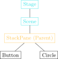

Model
Stage: the window (title, size, position:setX,setY). The primary stage is passed tostart.Scene: the content of a stage; it has one root.Node: anything that can be drawn. Every node has one parent; subclasses:Parent: a node with children —Group(no layout),Region(an area with size, background, layout: the panes and theControlwidgetsButton,Label,TextField, …),WebView;Shape:Line,Polyline,Polygon,Rectangle,Circle,Ellipse,Arc,QuadCurve,CubicCurve,Text,SVGPath;Canvas,ImageView,MediaView.
JavaFX replaced Swing, which had replaced AWT; it is used mostly for desktop applications.
Example
public class Hello extends Application {
@Override public void start(Stage stage) {
Button btn = new Button("Say hello");
btn.setOnAction(e -> System.out.println("Hello"));
StackPane root = new StackPane(btn, new Circle(40, Color.CYAN));
stage.setScene(new Scene(root, 300, 200));
stage.setTitle("Hello");
stage.show();
}
public static void main(String[] args) { launch(args); }
}Picture

Window, content, container, leaves.
Intuition
A GUI is a tree of boxes; the library draws the tree and routes the user's actions to its nodes.
Pitfall
Class names collide with other libraries (javafx.scene.shape.Rectangle vs java.awt.Rectangle): check the imports. The JavaFX process stays alive while a window is open; Platform.exit() ends it.